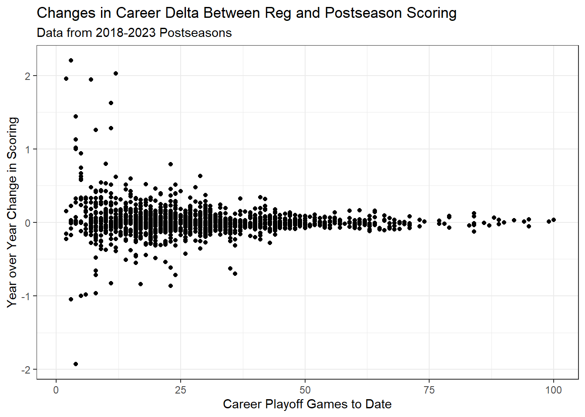

The Toronto Maple Leafs’ exit from the Stanley Cup Playoffs led to another round of fans and media alike casting aspersions on Toronto’s top players, notably Mitch Marner. The Leafs’ playoff disappointments in conjunction with Marner’s own perceived struggles have been a potent combination for one of the most individually scrutinized clubs in North American sports. This sort of criticism makes the assumption (and begs the question) that we can confidently tease out whether a player is a “playoff underperformer”. This also begs the question of whether there is something unique about the postseason crucible that makes players apt to underperform relative to our expectations of that player based solely on regular season performance. This quick post is going to explicitly attempt to answer the first question, but should address the second one given they are closely related. Doing any sort of analysis of samples as small as the Stanley Cup Playoffs (despite the games’ import) is full of pitfalls for reckless analysts and likely does not offer any interesting conclusions when approaching analysis with rigor.
Without delving into this at all, a reasonable prior when looking at players marked playoff failures is that they are the victim of misfortune. This is not to say that, based on less empirical methods (or “empirical” methods that do not actually hold up to scrutiny), one cannot come to the conclusion that a player performs poorly in the playoffs. Jack Han at his SubStack had a video outlining his case that there are inherent aspects of Marner’s game that lend themselves to playoff failure. I would recommend watching it and coming to your own conclusions, but I do wonder if this sort of analysis where you pull up poor on-ice and individual results in a small sample to criticize a player and then use video to confirm that assertion is problematic.
Nevertheless I wanted to see if there was anything I could do to find a point in time where we could be confident that a player was an underperformer. I took individual player data from the 2018 through the 2023 seasons and joined each player’s regular season and postseason scoring totals (in terms of points) and games played. Anyone familiar with my work or general outlook on the sport will know my opinions on using points to evaluate players (they are not positive). But, it’s easy data to pull and the reality is when players are being criticized for not showing up in the postseason, it is without a doubt almost always based on point totals. Given I am looking into these criticisms specifically, I thought it would make the most sense to meet people halfway.
Players on average lost about 0.11 points from their per game scoring averages in the playoffs. This was weighted by the harmonic mean of playoff and regular season games played in a given season. For context that would make a point per game player in the regular season (so 82 points in 82 regular season games) a 73 point player over that same 82 game stretch. That is not a massive drop-off in my estimation, but it is not nothing. In this stretch of games I looked at regular season scoring has out-paced that in the playoffs, but that margin has lessened in recent vintage. My first method was looking at how a player’s per game scoring rate in the playoffs changes over time and then the gap between a player’s per game scoring in each setting changes as that player accumulates games. If you look at a simple scatter plot, there is not much to see.
This first image is just year over year changes in playoff scoring rates. There are close to an even amount of observations on either side of the x axis and the y values converge towards zero as more playoff games are accumulated. Just eye-balling it, the rate of change (i.e. the slope at any given point or the derivative) levels out at around 25 to 30 games. A similar phenomenon exists when looking at the career difference in scoring rates across game types.

Not many conclusions to draw here; the results level out after a few seasons of playoff games (for most players given most teams do not make deep runs) and where you fall on this spectrum is most likely the result of random variance. I tried to look at correlations year over year for playoff underperformance, filtering out those who played less than 10 games in each season and found nothing. I even tried building a model where you look at career scoring differences to date and predict future differences, with case weights for games played. This resulted in something that looked reasonable, but when testing on out of sample data it was meaningless. Makes sense; dealing with samples this small should result in over-fitting if you are using a more robust modelling framework with a ton of variance. A more biased, simple model basically pops out results at the mean of the population that it was trained on. One other model I thought about but did not pursue was a survival regression trying to find at what point could we safely label a player a playoff underperformer. But I couldn’t think of any other features that would help prevent the model from over-fitting on just playoff scoring, which as we have seen is noisy over playoff-sized samples.
Maybe with some more time thinking about the framework of the survival analysis I could develop something interesting, but for now I am going to leave it there. Despite my best efforts, I could not find any evidence of players having an intrinsic inability to perform in the playoffs, at least in terms of point scoring (which, as I said at the top, is generally the basis of this type of criticism). Playoff scoring averages and deviations from the regular season seem to converge around 30 games and the differences are minute for those players. This should be surprising to no one. Per game point scoring is dependent on so many factors outside of a player’s control (opposing goaltenders, teammate performance, and to some degree ice time) that when looking at samples that are often smaller than seven games (since those who “underperform” are generally not on teams that advance far in the postseason), expecting anything other than noise is foolish. The same logic applies to any other measure you look at whether it’s on-ice goal scoring/allowing rates or even the expected versions of those measures. Something like expected goals is still dependent on other players successfully making plays, completing and receiving passes, and firing shots on net. If there is anything to players having an inherent ability to not perform in the playoffs (whether it is the result of differences in play style compared to the regular season or the higher caliber of competition), doing the sort of analysis Jack did that I linked is your best bet. But that is very much subject to extreme amounts of confirmation bias. So, for your own sanity as a hockey fan, a player not showing out in the playoffs on the surface should not be cause for panic or consternation. That does not mean that player did not necessarily perform poorly; moreover, it is not evidence that the player is irredeemable nor a proverbial choke artist.